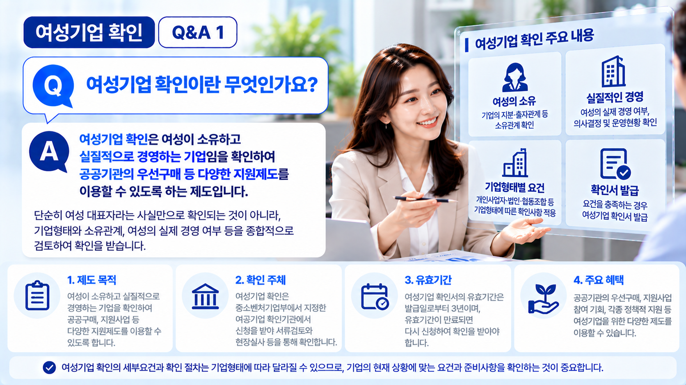
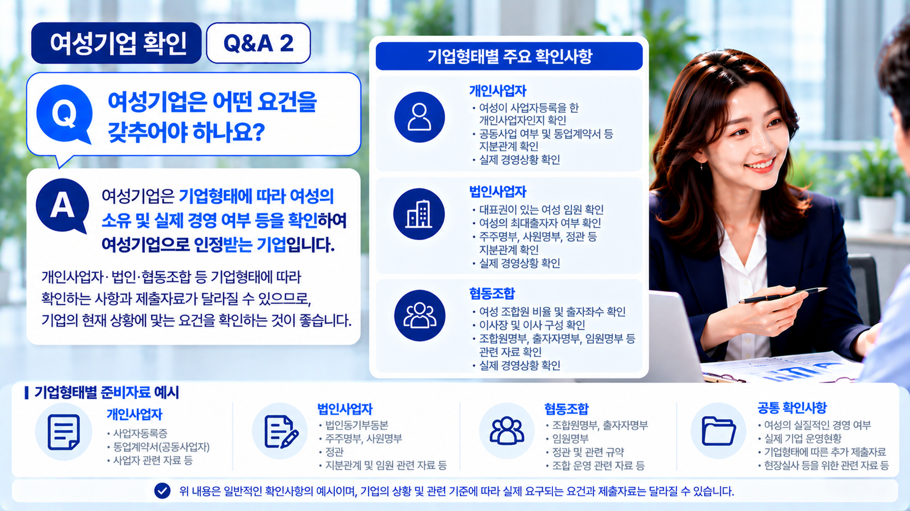
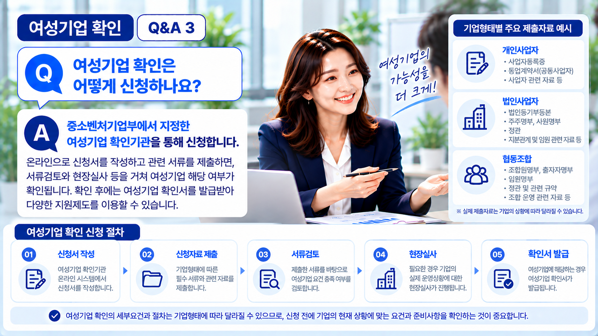

01. 여성기업 확인이란?
여성기업 확인은 여성이 소유하고 실질적으로 경영하는 기업인지 관련 기준과 절차에 따라 확인하는 제도입니다.
확인을 받은 기업은 여성기업을 대상으로 하는 공공구매 및 각종 지원제도 등에 참여할 때 여성기업임을 증명하는 자료로 확인서를 활용할 수 있습니다.
따라서 대표자의 성별만 확인하는 것이 아니라 기업형태와 소유관계, 실제 경영상황 등을 함께 살펴보게 됩니다.

02. 기업형태를 먼저 확인합니다
여성기업 확인을 준비할 때는 현재 사업체가 어떤 형태로 운영되고 있는지를 먼저 확인하는 것이 좋습니다.
| 기업형태 | 주요 확인 방향 |
|---|---|
| 개인사업자 | 사업자 및 공동사업 여부, 실제 경영상황 등 |
| 법인사업자 | 대표자, 출자·지분관계 및 실제 경영상황 등 |
| 협동조합 | 조합원·출자 및 임원 구성, 실제 경영상황 등 |
※ 기업형태와 구체적인 운영구조에 따라 확인해야 할 세부사항은 달라질 수 있습니다.
03. 소유·지분관계를 확인합니다
기업형태에 따라 여성의 소유관계를 확인하는 방법도 달라집니다.
법인의 경우에는 대표자뿐 아니라 출자 및 지분관계를 함께 확인해야 하며, 공동 개인사업자의 경우에도 공동사업자 사이의 사업관계와 지분관계를 살펴볼 필요가 있습니다.
협동조합 역시 조합원과 출자 및 임원 구성 등 기업형태에 맞는 별도의 확인사항이 있으므로 현재 조직구조를 기준으로 검토해야 합니다.

04. 여성의 실질적인 경영 여부도 확인합니다
여성기업 확인에서는 형식적인 대표자 명의뿐 아니라 여성이 실제로 기업을 경영하고 있는지도 중요한 확인사항입니다.
따라서 기업의 주요 의사결정과 업무수행, 사업 운영과 관련된 여성 대표자의 역할 등 실제 경영상황을 확인할 수 있습니다.
명의상 대표자와 실제 기업 운영자가 다른 경우에는 여성기업 확인 과정에서 문제가 될 수 있으므로 현재 경영구조를 사전에 살펴보는 것이 중요합니다.
05. 기업형태에 맞는 자료를 준비합니다
신청에 필요한 자료는 기업형태와 소유·경영구조 등에 따라 달라질 수 있습니다.
- 사업자등록 및 법인 관련 기본자료
- 대표자 및 기업현황을 확인할 수 있는 자료
- 출자·지분관계를 확인할 수 있는 자료
- 공동사업 관계를 확인할 수 있는 자료
- 협동조합의 조합원·출자·임원 관련 자료
- 실제 기업 운영상황을 확인하기 위한 관련 자료
※ 모든 기업에 위 자료가 동일하게 요구되는 것은 아니며, 기업형태와 신청기업의 상황에 따라 준비자료가 달라질 수 있습니다.
06. 신청 후 확인절차가 진행됩니다
신청서와 관련 자료를 제출하면 기업의 형태와 소유·경영관계 등에 대한 확인절차가 진행됩니다.
이 과정에서는 제출자료에 대한 검토와 함께 필요한 경우 실제 기업 운영상황 등에 대한 확인이 이루어질 수 있습니다.
따라서 신청서에 기재하는 내용과 실제 기업 운영상황 및 제출자료가 서로 일치하도록 준비하는 것이 중요합니다.

07. 여성기업 확인 신청은 이런 흐름으로 진행됩니다
실제 절차에서는 기업형태와 신청내용에 따라 제출자료 검토와 필요한 확인절차 등이 진행됩니다.
08. 신청 전 특히 확인할 사항
여성기업 확인을 준비하면서 가장 먼저 주의해야 할 점은 여성이 대표자로 등록되어 있다는 사실만으로 여성기업 해당 여부를 판단하지 않는 것입니다.
기업형태에 따른 소유·지분관계와 실제 기업 경영 여부를 함께 살펴보고, 신청내용을 확인할 수 있는 자료를 준비해야 합니다.
특히 공동사업자나 여러 주주가 있는 법인, 협동조합처럼 소유 및 의사결정 구조가 복잡한 경우에는 신청 전에 현재 구조가 여성기업 확인기준에 어떻게 적용되는지 먼저 검토하는 것이 좋습니다.
우리 기업도 여성기업 확인을 받을 수 있을까요?
간단한 자가진단을 이용하거나 현재 기업형태와 소유·경영상황을 기준으로 상담을 신청해 보세요.